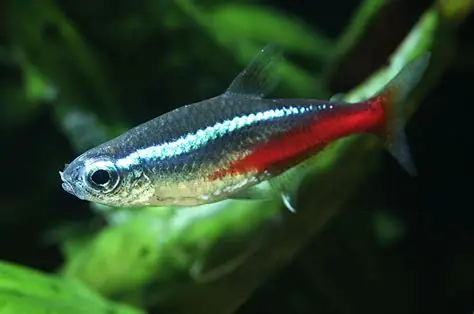

Ancitrus
Der Ancitrus ist ein beliebter Süßwasserzierfisch, der durch seine auffällige Farbe auf sich aufmerksam macht.

Ancitrus
- Aussehen: Dunkelbraun mit hellen Punkten, flacher Bauch, Männchen mit Geweih-ähnlichen Antennen auf dem Kopf
- Vorkommen: Südamerika (Amazonasbecken) in schnell fließenden Gewässern mit viel Totholz
- Aquarium: Ab 80 cm Länge;
Wassertemperatur ca. 22–28 °C;
Verstecke (Höhlen); echtes Holz zum Raspeln - Nahrung: Pflanzen- und Allesfresser (Algen, Welstabs, Gemüse wie Gurke, Holzfasern)
Meine Bewertung
⭐⭐⭐⭐⭐
Zurück zur Übersicht
Hier klicken